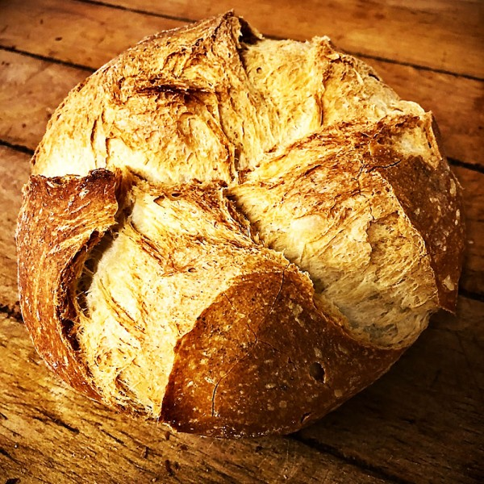

4,50€ - Pan Arapiles
El pan candeal, sobado o bregado es un tipo de pan blanco que se caracteriza por una baja hidratación, textura densa y larga durabilidad. Su elaboración difiere de la de otros panes por un único levado y por un proceso de «refinamiento», por el cual se compacta y endurece la masa. En este sentido, es por definición el opuesto al pan de flama o de masa blanda (el pan común).
1,80€ - Pan Masa Madre
El pan de masa madre o de masa madre es un pan elaborado mediante la fermentación de masa utilizando lactobacillaceae silvestres y levaduras. El ácido láctico de la fermentación imparte un sabor agrio y mejora las cualidades de conservación.

2,10€ - Pan Espelta
La espelta es un tipo de trigo. Una variante conocida como Triticum Spelta, que suele darse en climas fríos y húmedos. El pan de espelta está elaborado con harinas de trigo. Pero es más sano, más digestivo, menos calórico y con mayor número de vitaminas.

1,50€ - Pan Trigo Sarraceno
A pesar de su denominación, el pan de trigo sarraceno no es de trigo ni su origen es sarraceno. Lo que se conoce por ese nombre tan particular no es otra cosa que una planta herbácea, también llamada alforfón, cuyo origen se remonta a las inmensas llanuras de Asia Central hace más de 7.000 años.